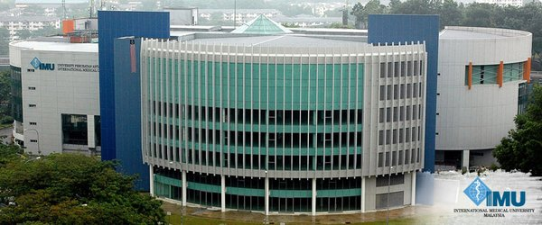

The International Medical University (abbreviated name according to the Charter of the University - IMU) is a rapidly developing innovative educational and research institution, an academic center that participates in the social development of the Kyrgyz Republic. Today, the International Medical University is a relatively young university in the Kyrgyz Republic, with 3 faculties, 1 college, 1 school, Avicenna Medical Clinic, a research center, "Santa-Den Sooluk" television studio and a contingent of 1,000 students from across the country and Eurasian continent. The infrastructure of the IMU in the form of a campus is located in a large area of the city of Bishkek and has all the necessary conditions for training.
IMU in its activities is focused on the satisfaction of personnel demands of medicine, science, and society. The training of specialists for such strategic sectors of the Kyrgyz Republic, as well as research with the ability to innovate and create high medical technologies has begun. A multi-level education system is implemented at the nterna-tional Medical University, allowing the realization of the principle of lifelong education: preuniversity training (school).
| International Medical School (IMU) - A Quick Overview |
| Year of Establishment: |
2003 |
| Country rank: |
5 |
| World rank: |
46 |
| Type of University: |
Public |
| Duration of MBBS: |
4.5+1 Years |
| Recognitions: |
NMC and WHO approved |
| Intake period: |
- |
| Medium of Teaching: |
English |
| NEET Requirements: |
Yes |
| Eligibility Exam (IELTS/TOEFL): |
Not required |
Recognitions of International Medical University
The Universities in Kyrgyzstan are recognized and approved by organ-zations like WHO, IMED, MCI, FAIMER and other.
So, due to high recognition and approval by the universities, the degree is recognized all over the world which makes it easier for the students to get a place anywhere across the Globe.
There are 5 faculties in Crimea Federal University:
MBBS PROGRAM
Duration: 4.5 Years (54 Months) + 1 Year Internship
Session: September & January
MASTER OF MEDICINE
Duration: 2 Years
Medium of Instruction: English
Session: September & January
DOCTOR OF MEDICINE
Duration: 4 Years
Medium of Instruction: English
Session: September & January
MASTER OF PUBLIC HEALTH
Duration: 2 Years
Medium of Instruction: English
Session: September & January
| Crimea Federal University Fees Structure: |
| 1st Year |
3 Lakhs |
| 2nd Year |
3 Lakhs |
| 3rd Year |
3 Lakhs |
| 4th Year |
3 Lakhs |
| 5th Year |
3 Lakhs |
| 6th Year |
3 Lakhs |
| Other Fees |
| Hostel |
120-220$/year |
| Mess(Optional) |
- |
Eligibility Criteria Crimea Federal University
⭐ Academic requirements: Must have passed 10+2 with minimum aggregate 50% score in Physics, Chemistry, and Biology.
⭐ Age requirement: Must be 17 years of age as on 31st December in the admission year.
⭐ NEET requirements: Qualified NEET exam (50th percentile for general/EWS category and 40th percentile for unreserved category)
Admission Procedure
STEP 1: Apply Online
STEP 2: Registration and Payment
STEP 3: Receive Admission Confirmation Letter
STEP 4: Provide us all the necessary Original Documents
STEP 5: Apply for VISA Invitation
STEP 6: Get VISA and Original Documents
Documents Required
⭐Pass certificates and mark sheet of class 10th and 12th.
⭐Birth certificate
⭐Passport size photos
⭐NEET scorecard
⭐Valid Passport
⭐Health Certificate
Benefits of Studying MBBS at International Medical University
!!!!!!PLACEHOLDER INFO IS YET TO BE UPDATED!!!!!!